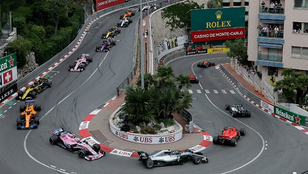
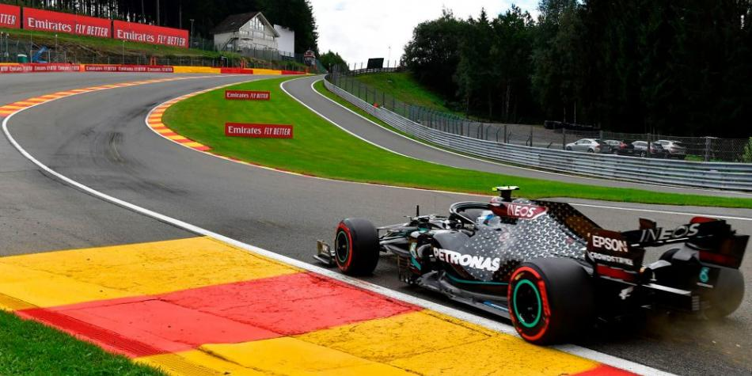
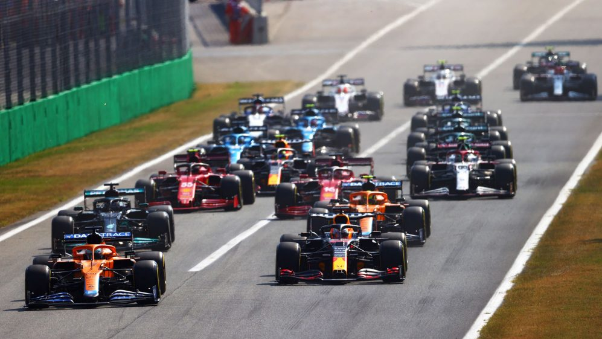
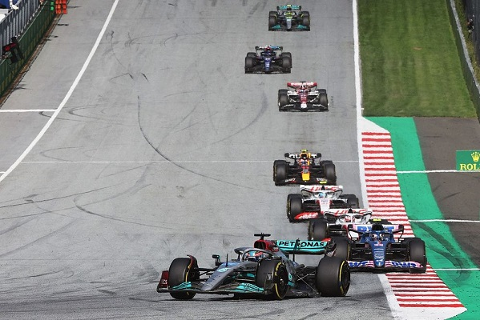

CIRCUITOS
Circuito de Mónaco (Mónaco)
En las estrechas calles del circuito de Montecarlo se han disputado ya 59 Grandes Premios en una delatada historia que arrancó incluso antes que la del propio campeonato de Fórmula 1. En sus poco más de tres kilómetros de recorrido, los monoplazas serpentean angustiosamente durante 78 vueltas.
Circuito de Spa-Francorchamps (Bélgica)
El Gran Premio de Bélgica es una carrera clásica en el calendario de la Fórmula 1. Es uno de los circuitos más queridos, tanto por los aficionados como por los pilotos. La Fórmula 1 suele marcar su regreso del parón veraniego con esta carrera.
Circuito de Monza (Italia)
El Autodromo Nazionale Monza, no sólo es uno de los circuitos más rápidos, sino también uno de los más antiguos. Fue construido en 1922 en sólo 110 días. Desde 1950, el Circuito de Monza Eni es la sede permanente del Campeonato del Mundo de Fórmula 1. Las largas rectas y las estrechas chicanes que conducen a través del parque real han establecido repetidamente nuevos récords de velocidad en el Gran Premio de Italia.
Red Bull Ring (Austria)
La pista ubicada en Austria cuenta con 4,318 kilómetros de distancia y es el trazado más corto del Mundial. Este circuito se corre en 71 vueltas y se pasa por 10 curvas de las que siete son a la derecha y las restantes tres son a la izquierda.